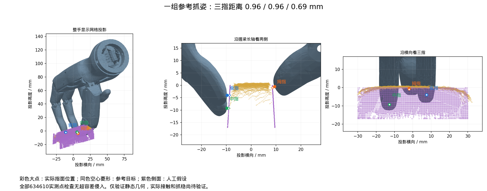

沿用以前确认的整手抓姿，手根微移约0.85毫米、转动0.45°，做了一次局部修正。
| 手指 | 参考手型距离 | 修正后距离 | 修正后朝向偏差 |
|---|
金色点是实测握梁，紫色点是人工假设侧面；三个大彩点是实际指面位置，同色小菱形是各指参考目标。可关闭手部，单独看三对点。
距离要求≤1mm，朝向偏差要求≤45°（0°为正对）。碰撞检查覆盖全部634610个实测点、自碰和已接受的假设侧面，侵入容差0.1mm；页面环境为局部1mm格代表点。这里只验证静态几何，实际接触、抓稳与接近路径仍待验证。预张开与闭合是独立构型对照，切换不表示验证了两者间的运动。
